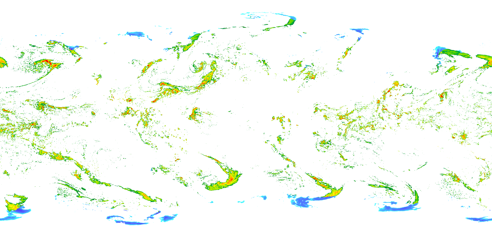

DATA SONIFICATION / 07 NOV 2026
One line,
one chord.
Each of the image's 3,600 vertical columns becomes one chord. All 88 piano notes span the image height, from A0 at the bottom to C8 at the top. Precipitation color sets each note's volume. Smooth synthesized tones flow continuously; choose the total pass length from 1 second to 1 minute.

Loading the NASA frame…
Local input: NASA IMERG frame · PNG · 3600 × 1800 · NASA SVS source